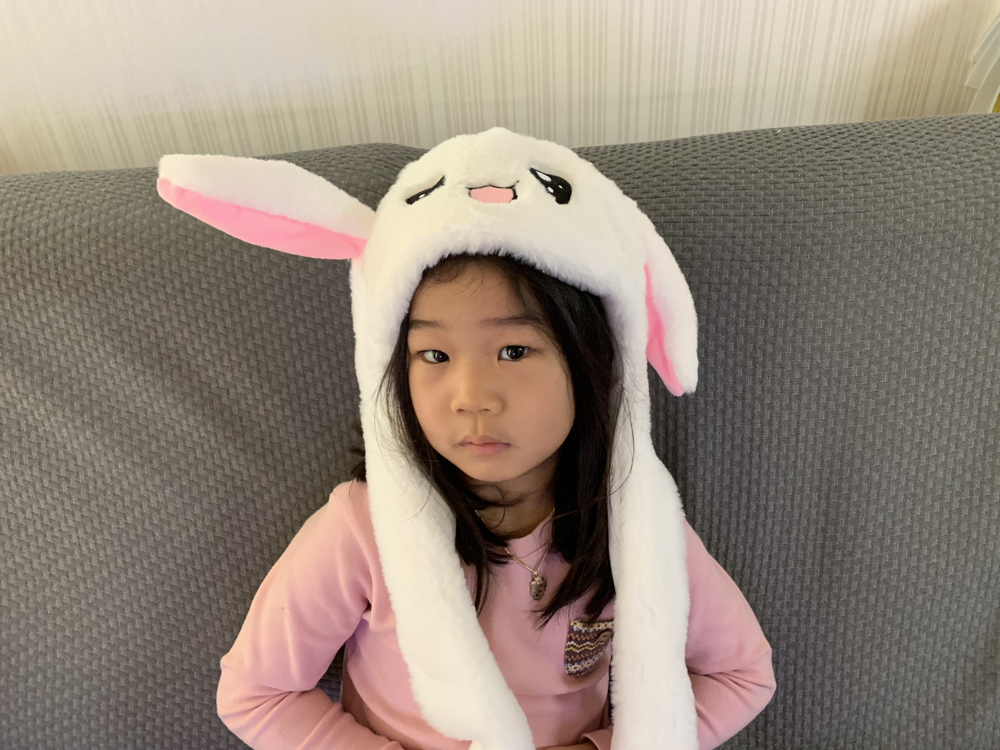
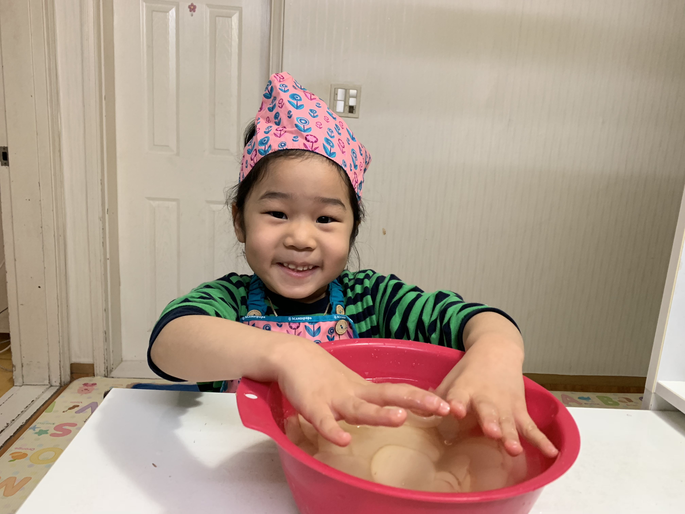

- 서현이는
- 영어공부
- 내친구들
서현이의 하루
서현이는 아침에 일어나서 유치원에 가죠. MS유치원 별님반이에요. 서현이는 유치원에 다녀와서 한글 교실과 미술 교실을 가죠. 집에 오면 디즈니 소피아공주를 봐요.

서현이는 누구일까요
- what she likes : 그림그리기, 요괴메카드
- what she dislikes : 목욕하기
- height : 110 cm
- weight : 20 kg
- age : 6 yr
- nickname : 뾰로롱

서현이가 좋아하는 것
| 서현이가 관심있는 것들 |
| 좋아하는 친구들 |
소피아, 가드니아, 쥬쥬 |
| 좋아하는 캐릭터 |
양피곤, 호랑나비, 달리마, 이천숭이 |
| 좋아하는 노래 |
요괴가 나타났다/요괴 친구들 |
| 좋아하는 사람 |
엄마, 아빠, 할머니, 이모 |
서현이의 스케쥴
- 뮤지컬 관람 : 19-01-29 Tue
- 별님반 수료식 : 19-02-19 Tue 2:30 PM
- MS유치원 예비모임 : 19-02-23 Sat 10:00 AM
Created by hemink, Thanks to 생활코딩